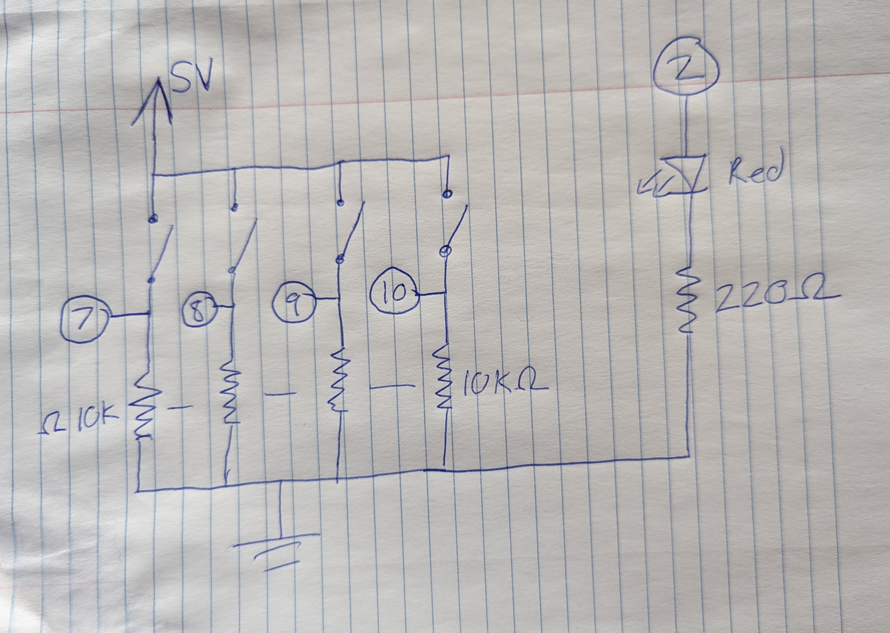
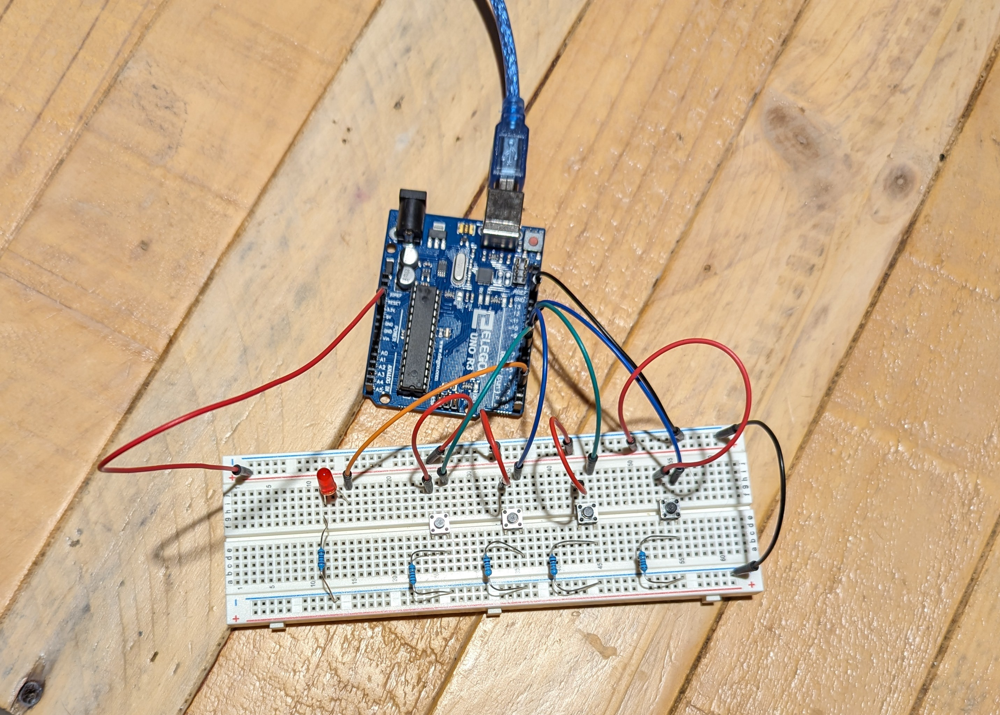

Sam's Assignment 5!

This keyboard has an LED that turns on and off when you click the screen!
Arduino Code
// set pin numbers
const int key1 = 7;
const int key2 = 8;
const int key3 = 9;
const int key4 = 10;
const int led = 2;
// holds led reading from p5 (1 or 0)
int ledSignal = 1;
void setup()
{
Serial.begin(9600); // start connection
// Setup pins
pinMode(key1, INPUT);
pinMode(key2, INPUT);
pinMode(key3, INPUT);
pinMode(key4, INPUT);
pinMode(led, OUTPUT);
// LED High
digitalWrite(led, 1);
}
void loop(){
// reads one integer if serial dat is available
while(Serial.available() > 0) {
ledSignal = Serial.parseInt();
}
// set LED state
digitalWrite(led, ledSignal);
// formats data of button states
String data = String(digitalRead(key1))+ String(digitalRead(key2))+
String(digitalRead(key3)) + String(digitalRead(key4));
// send button states to p5 with delays to please the Serial gods
delay(25);
Serial.println(data);
delay(25);
}
p5.js Code
let polySynth; // initialize synth variable
let ledState, buttonState = 1; //
// object holds playing frequencies for each button
let freqs = {
0:256,
1:311,
2:390,
3:440
};
// object holds playing states for each button
let playing = {
0:false,
1:false,
2:false,
3:false
};
const BAUD_RATE = 9600; // This should match the baud rate in your Arduino sketch
let port, connectBtn; // Declare global variables
function setup() {
setupSerial(); // Run our serial setup function (below)
// Create a canvas that is the size of our browser window.
// windowWidth and windowHeight are p5 variables
let cnv = createCanvas(windowWidth, windowHeight);
// p5 text settings. BOLD and CENTER are constants provided by p5.
// See the "Typography" section in the p5 reference: https://p5js.org/reference/
textFont("system-ui", 50);
textStyle(BOLD);
textAlign(CENTER, CENTER);
cnv.mouseClicked(changeLed); // changes LED state if canvas is clicked
polySynth = new p5.PolySynth(); // creates synth object
userStartAudio(); // starts audio in browser
}
function draw() {
const portIsOpen = checkPort(); // Check whether the port is open (see checkPort function below)
if (!portIsOpen) {
// This sends signal to turn off LED if disconnected from arduino
return; // If the port is not open, exit the draw loop
}
background("darkcyan"); // Background color
fill("coral"); // Fill color for the text
let str = port.readUntil("\n"); // Read from the port until the newline, gets 4 character string
if (str.length == 0) return; // If we didn't read anything, return.
text(str, windowWidth / 2, windowHeight / 2); // Position text in center of the screen
// loop that iterates through button state string
for(i = -100; i <= 3; i++){
buttonState = Number(str.charAt(i)); // converts the indexed string to a number
// Change text and colors based on button state. In p5, you can set colors
// using standard CSS color names as well as many other color formats.
if (buttonState === 0) {
// If the button is not pressed
polySynth.noteRelease(freqs[i]); // end note of indexed button
polySynth.noteAttack(freqs[i]*2, 1); // end octave of indexed button
playing.i = false;
} else if (buttonState === 1) {
// If the button is pressed
if(playing.i === false){ // opens if note is off
polySynth.noteAttack(freqs[i], 1); // start note of indexed button
polySynth.noteAttack(freqs[i]*2, 1); // start octave of indexed button
playing.i = true;
}
}
}
}
// Three helper functions for managing the serial connection.
function setupSerial() {
port = createSerial();
// Check to see if there are any ports we have used previously
let usedPorts = usedSerialPorts();
if (usedPorts.length > 0) {
// If there are ports we've used, open the first one
port.open(usedPorts[0], BAUD_RATE);
}
// create a connect button
connectBtn = createButton("Connect to Arduino");
connectBtn.position(5, 5); // Position the button in the top left of the screen.
connectBtn.mouseClicked(onConnectButtonClicked); // When the button is clicked, run the onConnectButtonClicked function
}
function checkPort() {
if (!port.opened()) {
// If the port is not open, change button text
connectBtn.html("Connect to Arduino");
// Set background to gray
background("gray");
return false;
} else {
// Otherwise we are connected
connectBtn.html("Disconnect");
return true;
}
}
function onConnectButtonClicked() {
// When the connect button is clicked
if (!port.opened()) {
// If the port is not opened, we open it
port.open(BAUD_RATE);
} else {
// Otherwise, we close it!
port.close();
}
}
// changes state of LED
function changeLed(){
if(ledState === 1){
port.write("0"); // sends to arduino to turn off
ledState = 0;
} else {
port.write("1"); // send to arduino to turn on
ledState = 1;
}
}
Schematic

Breadboard
